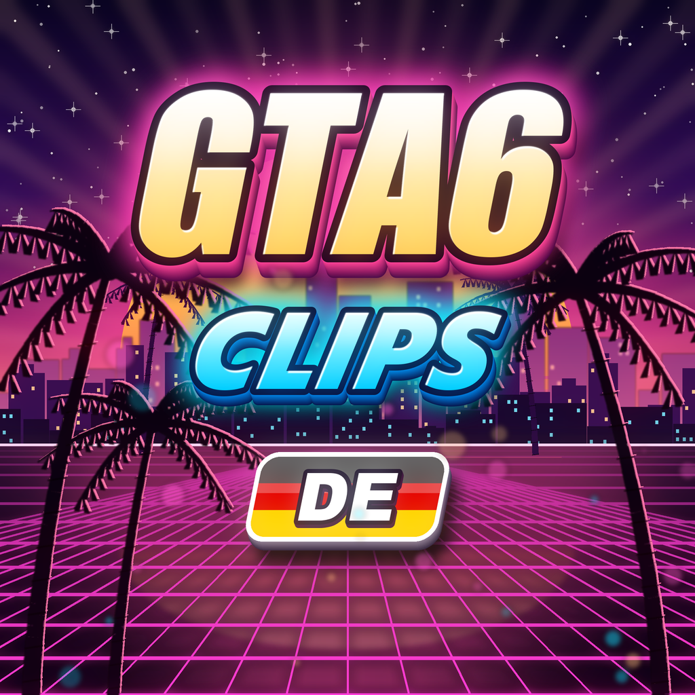

GTA6 Clips DE
Highlight-Clips aus deutschsprachigen GTA-6-Streams
Was ist das?
GTA6 Clips DE ist ein privates Werkzeug, das aus Streams und Videos von Creatorn, die das Clippen erlaubt haben, kurze Hochformat-Clips schneidet. Jeder Clip wird vor der Veröffentlichung von Hand geprüft und freigegeben. Der Creator wird in jeder Beschreibung genannt.
TikTok-Anbindung
Die App nutzt das TikTok Login Kit, damit sich der Kontoinhaber mit seinem eigenen TikTok-Konto anmeldet, und die Content Posting API, um freigegebene Clips auf genau diesem Konto zu veröffentlichen. Es wird nur auf dem Konto gepostet, das die App selbst autorisiert hat.
English summary
GTA6 Clips DE is a personal tool that turns approved stream highlights into short vertical clips. The account owner signs in with TikTok Login Kit, and approved clips are posted to that same account via the Content Posting API. Every clip is reviewed by hand before posting and credits the original creator.